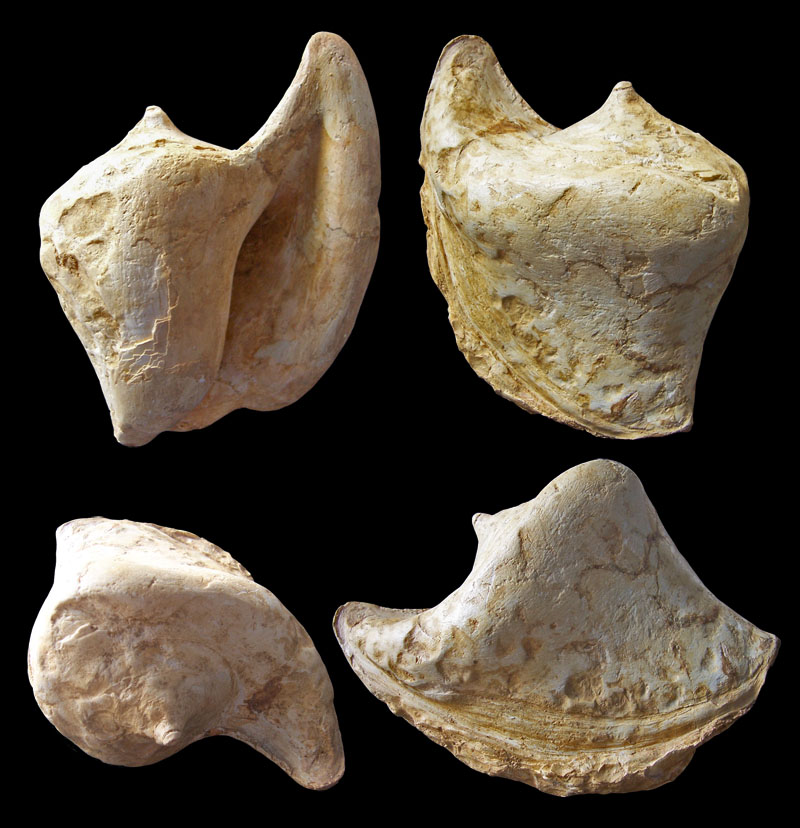

† Dilatilabrum paulensis
(Magne & Vergneau-Saubade, 1972)
Ископаемые роды стромбид:
† Dilatilabrum
Cossmann, 1904
† Laevella
Palmer, 1953
✝ Ueckeritzella
Grundel, 1998
† Volutostrombus
Garvie, 2013
...